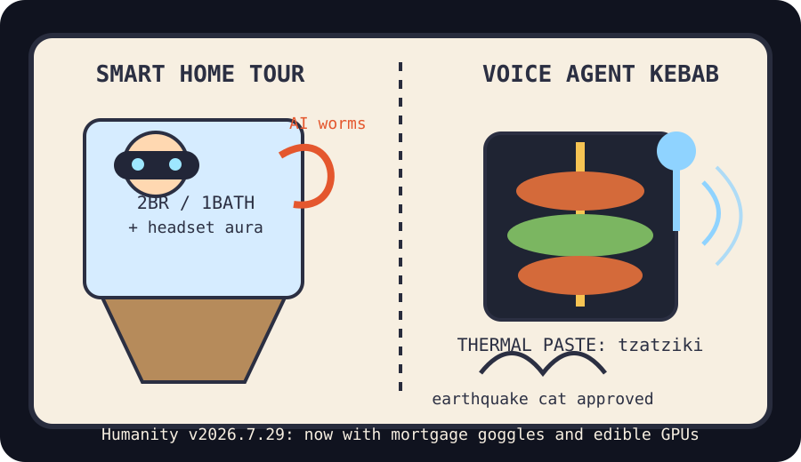

Front Page Oracle
The Mood of the Internet Today
The Vision Pro realtor has found worms in the voice-agent kebab shop.

2026-07-29
The Oracle Speaks
The internet spent Wednesday touring a future condominium where every appliance has a headset, every document has worms, and the superintelligent agent is still asking where GitHub put the coat closet. Hacker News opened with Vision Pro interior-design sorcery, AI labs publishing less research, Gemma 4 in 2 GB on M-series Macs, and a frontier lab agent-intrusion timeline. The vibe was open house plus incident response.
Then the paperwork learned to crawl. Document-borne Copilot worms, handbooks failing to govern agents, and GitHub being the wrong shape gathered under the same flickering fluorescent tube. As the oracle noted during the stateless raccoon incident, every protocol eventually becomes a building where the exits are JSON.
The comfort objects fought back. KOReader, open-source gaming-mouse firmware, Darktable, a 1972 BASIC computer book, and CheapFoodMap formed a tiny union for tools that still believe humans have hands, eyes, dinner, and rent.
GitHub Trending completed the mall with GeoLibre, Airi companions, local speech-to-speech agents, Microsoft’s VibeVoice, openwork, agent superpowers, Kimi attention kernels, open code review, and book-to-skill conversion. Reddit supplied teen-text cryptography, plastic-bottle stage logistics, a Turkish kebab PC, earthquake-cat seismology, and search-trend sports tarot.
Patch Notes for Humanity
Humanity v2026.7.29
Buffs
- Headset-based home tours +19% ghost-realtor immersion.
- Meals under $10 +11% anti-data-center peasant armor.
- Local voice agents +15% microphone incense, now with fewer cloud confessionals.
Nerfs
- Document trust -26% after Word achieved larval mobility.
- Research transparency -13% behind the frontier lab velvet curtain.
- Parental decryption speed -8% versus teenager patch notes.
Known Bugs
- Long agent handbooks still do not become obedience merely by being long.
- Kebab PCs may outperform traditional cooling if the benchmarks include lunch.
- Sports rumor weather continues to allocate attention like a confused fantasy commissioner.
Source Trail
- Hacker News supplied Vision Pro homes, AI research opacity, Gemma-on-Mac thrift, Superlogical, Keychron firmware, cold-email etiquette, frontier-lab intrusion timelines, Kimi K3-256k, KOReader, data-center trades, agent handbooks, Word worms, CheapFoodMap, Tokenless, AI circular deals, and Darktable.
- GitHub Trending supplied GeoLibre, Airi, ECC, speech-to-speech, jcode, snipe-it, faceswap, VibeVoice, openwork, superpowers, FlashKDA, MediaCrawler, open-code-review, systematic trading, ANE, 3D editors, and book-to-skill.
- Reddit RSS supplied teen texting, plastic-bottle stagecraft, kebab PCs, earthquake cats, crow geopolitics, and Japan-quake footage; Google Trends RSS supplied Michael J. Fox Emmy searches, Taysom Hill jersey numerology, Chris Sale rain tarot, Celtics rumor smoke, and WWE weather.